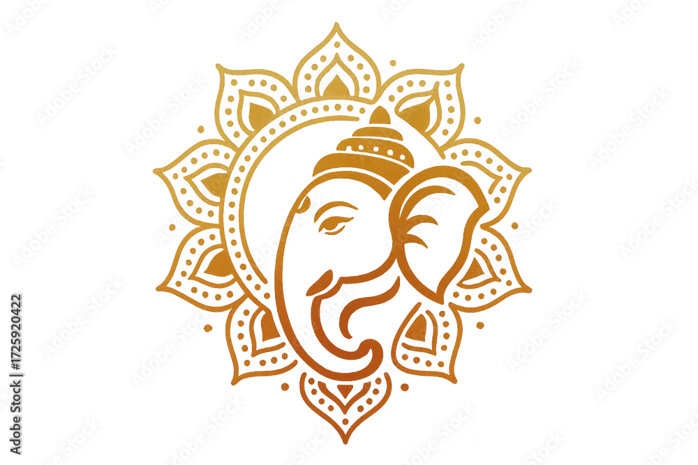
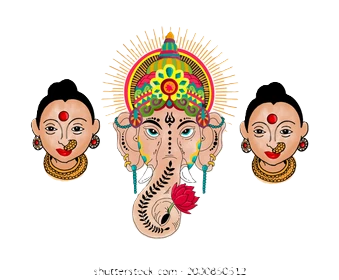
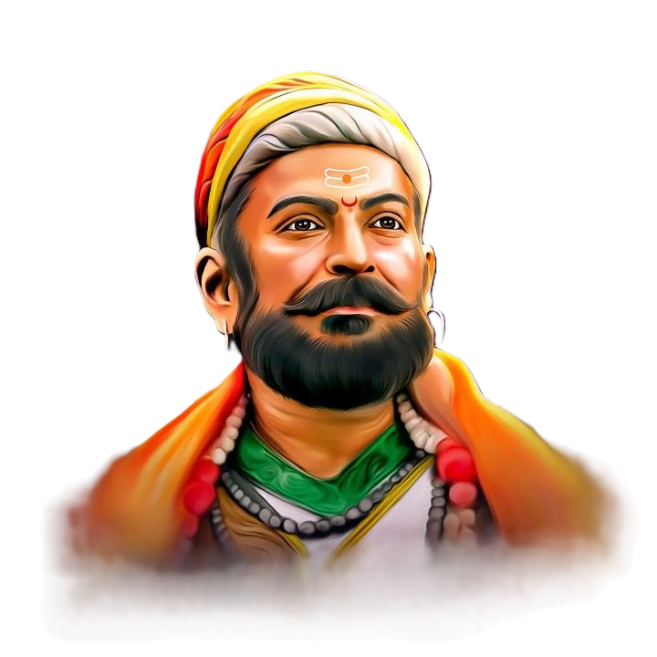

Maharashtra is one of the largest and most important states in India, located in the western part of the country. It is known for its rich history, diverse culture, and strong economic development. The capital city is Mumbai, which is also the financial capital of India. The state has a mix of modern cities and traditional villages, making it culturally vibrant and diverse. Maharashtra has a glorious historical background and is closely associated with the great Maratha ruler Chhatrapati Shivaji Maharaj. The state is famous for its forts, festivals, and traditions. People celebrate festivals like Gudi Padwa, Ganesh Chaturthi, and Diwali with great enthusiasm. Marathi is the official language, and the culture reflects unity, simplicity, and strong traditions.
Festivals in Maharashtra are celebrated mainly to preserve culture, traditions, and religious beliefs. They help people stay connected to their roots and pass values from one generation to another. Most festivals have religious significance and are dedicated to gods and goddesses, where people pray for happiness, peace, and prosperity. For example, festivals like Gudi Padwa mark new beginnings and positivity in life. Another reason festivals are celebrated is to remember historical events and great personalities. Maharashtra has a strong historical background linked with leaders like Chhatrapati Shivaji Maharaj, and many celebrations reflect bravery, unity, and pride. Festivals also follow seasonal changes, especially in agriculture, where people celebrate good harvests and thank nature.
Gudi Padwa is a very important festival celebrated mainly in Maharashtra as it marks the beginning of the Hindu New Year according to the lunisolar calendar. It usually falls in March or April and symbolizes new beginnings, prosperity, and happiness. The festival is deeply connected with nature, as it comes during the spring season when crops are harvested and everything looks fresh and vibrant. On this day, people clean and decorate their homes, wear new clothes, and prepare traditional sweets like puran poli.
One of the most significant aspects of Gudi Padwa is the raising of the “Gudi” outside homes. The Gudi is made using a bamboo stick, a bright cloth, neem leaves, mango leaves, and a decorated pot placed upside down. It is believed to bring good luck and ward off evil. Spiritually, it represents victory and success, and is often associated with the triumph of good over evil, including the victory of Lord Rama after defeating Ravana.
Historically, Gudi Padwa is also believed to mark the day when Lord Brahma created the universe, making it highly sacred. It encourages people to start new ventures, set goals, and welcome positivity into their lives. Overall, Gudi Padwa is not just a festival but a celebration of culture, tradition, hope, and the beginning of a new journey.
Ganesh Chaturthi is a very important festival celebrated with great devotion. It marks the arrival of Lord Ganesha to earth. The festival involves installing clay idols, offering prayers, and ends with a grand immersion in water bodies.

Ganesh Chaturthi is a very important festival celebrated with great devotion. It marks the arrival of Lord Ganesha to earth. The festival involves installing clay idols, offering prayers, and ends with a grand immersion in water bodies.
Gauri Ganpati is a popular and culturally rich festival celebrated in Maharashtra with great devotion and enthusiasm. It is a combination of two festivals—Ganpati (Lord Ganesha) and Gauri (a form of Goddess Parvati). The festival usually begins with the arrival of Lord Ganesha during Ganesh Chaturthi, followed by the arrival of Goddess Gauri after a few days. People decorate their homes, prepare special traditional dishes, and perform rituals to welcome both deities. The celebration reflects the strong cultural roots, unity, and spiritual beliefs of Maharashtrian people.
The festival of Gauri Ganpati holds great religious and social importance. Lord Ganesha is worshipped as the remover of obstacles and the god of wisdom, while Goddess Gauri symbolizes prosperity, happiness, and well-being. It is believed that welcoming Gauri into the home brings blessings, peace, and abundance. The festival also strengthens family bonds as relatives come together to celebrate, share meals, and perform rituals. Additionally, it promotes cultural traditions and values among the younger generation, keeping the heritage of Maharashtra alive.


Nag Panchami is dedicated to the worship of snakes (Naag Devta). People offer milk and prayers at temples or snake images. It is believed to protect from dangers and bring blessings. In villages, it is celebrated with traditional rituals and strong cultural belief.
Ashadhi Ekadashi is an important religious festival dedicated to Lord Vitthal of Pandharpur. Thousands of devotees (Warkaris) walk long distances in a pilgrimage called “Wari.” They sing bhajans and show deep devotion. It teaches faith, discipline, and unity.
Diwali is the festival of lights, celebrated with diyas, rangoli, sweets, and fireworks. In Maharashtra, it includes special traditions like Vasubaras, Dhanteras, Narak Chaturdashi, Lakshmi Pujan, and Bhau Beej. It symbolizes victory of light over darkness and good over evil.
Pola is a unique farmers’ festival in Maharashtra. On this day, bulls are decorated and worshipped because they help in farming. Farmers show gratitude towards their animals. It reflects the agricultural culture and respect for hard work.
Holi in Maharashtra is known more for Rang Panchami, celebrated a few days after Holi. People play with colors, water, and enjoy music and dance. It spreads happiness, removes differences, and brings people together.
Makar Sankranti is celebrated in January and marks the transition of the sun into Capricorn. People exchange sweets made of sesame and jaggery saying “Tilgul ghya, god god bola.” Kite flying is also popular. It represents positivity, friendship, and letting go of negativity.
Narali Purnima is an important festival for the fishing communities of coastal Maharashtra. On this day, fishermen offer coconuts to the sea as a symbol of respect and pray for safety and a prosperous fishing season. It also marks the end of the monsoon period when fishing activities resume. The festival shows the deep connection between people and nature.
Ellora Festival is celebrated near the Ellora Caves in Maharashtra. It includes performances of classical dance and music by well-known artists. The event highlights the historical importance of the caves and attracts tourists from different places. It showcases the artistic heritage of the region.